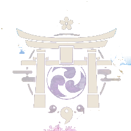
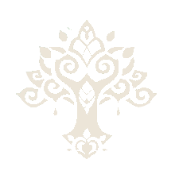

首页
蒙德
璃月
稻妻
须弥
枫丹


智慧之国——须弥
地理位置：须弥位于提瓦特大陆的中西部，璃月的西侧，是一个草木的国度。 须弥分为雨林和沙漠两大部分，沙漠位于须弥的西部和北部，被称为大赤沙海和苍漠囿土。
文化特色：须弥是一个充满沙漠和热带雨林的地方，其文化似乎受阿拉伯、埃及、 和印度文化的启示
节日：须弥有一个节日叫做花神诞日，每年纪念“小吉祥草王”的诞生之节日.
草神与教令院：须弥朝拜草魔神，另称智慧之神。全提瓦特最优秀的学院须弥教令院也位于须弥。